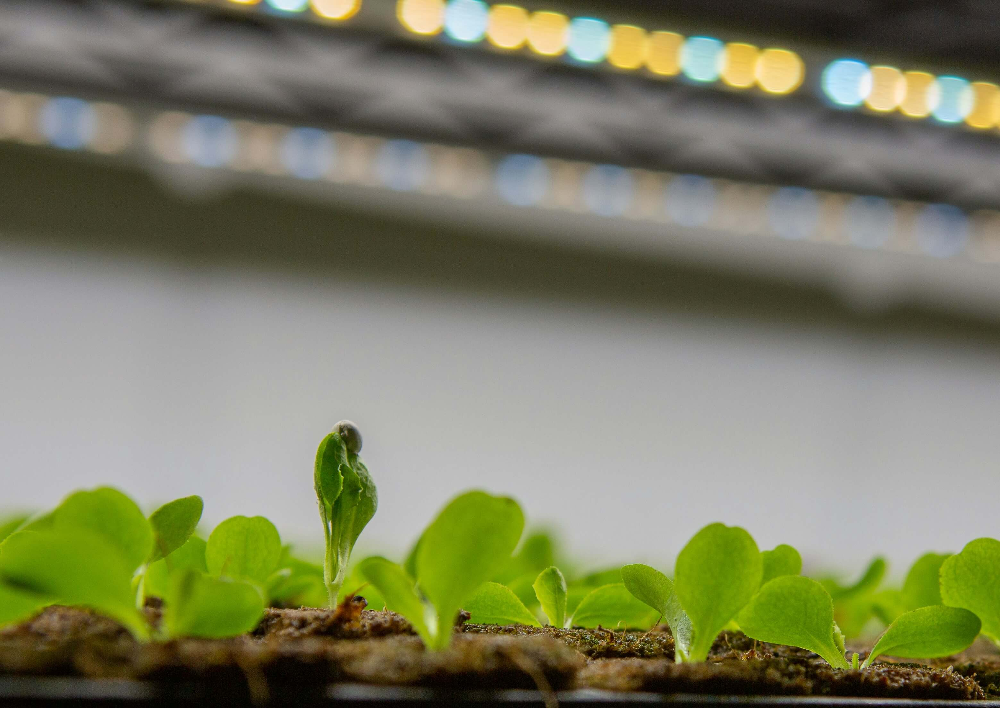

Oasis Farms, LLC
Farm-to-Table Hydroponics.
Grown Locally. Harvested Fresh. Delivered Fast.

Built for Freshness, Precision, and Scale
Oasis Farms is a modern hydroponic farming operation focused on supplying restaurants, retailers, and communities with ultra-fresh produce. By growing locally and harvesting on demand, we eliminate long supply chains and deliver consistent quality year-round.

Why Hydroponic, Farm-to-Table Matters
Hydroponics isn’t a trend—it’s a better system. We grow more food using less water, no soil, and zero unnecessary chemicals.